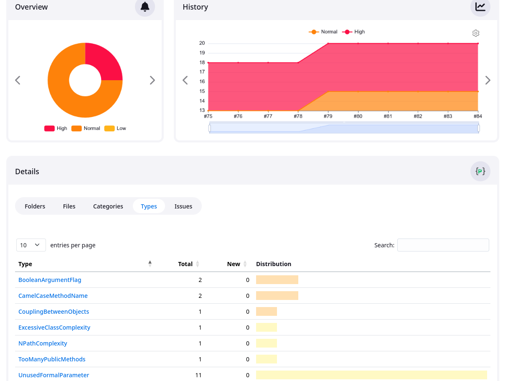
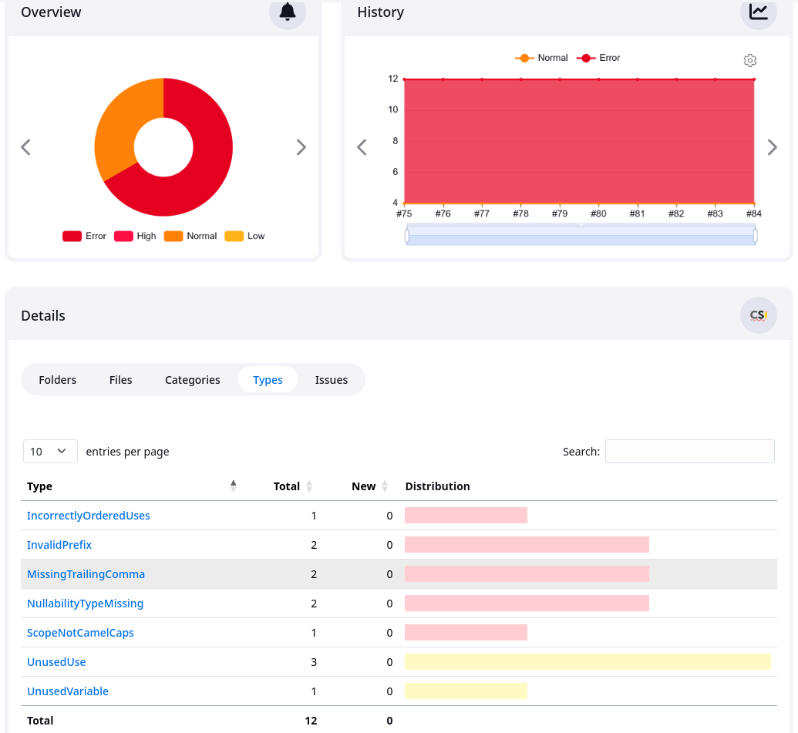

Testeándolo todo: testing más allá de PHPUnit
Ricardo Sanz Ante
Recorrido
Recorrido
- Introducción
- ¿Cómo testear?
- Más allá de PHPUnit
- Cuándo y dónde testear
- Implementar
Introducción
Introducción
¿Por qué testear?
- Paz de espíritu
- Funcionalidades sólidas
- Detección y corrección temprana de errores
- Trabajar con redes seguridad
- Tardes y fines de semana sin sobresaltos
- Ahorro de tiempo a medio y largo plazo
- Paz de espíritu
Introducción
Tests nativos de Drupal
- Unit tests
- Kernel tests
- Tests funcionales
- Tests funcionales de JavaScript
- Nightwatch
Introducción
Más allá de PHPUnit
- Análisis de código estático
- Paquetería (seguridad y actualizaciones)
- Tests de aceptación
- Tests de regresión visual
- Accesibilidad
- Rendimiento, calidad y corrección
- API internas y externas
- Cabeceras HTTP
- Tests de humo
- Pruebas de despliegue
Introducción
Qué testear
- Entorno local
- CI
- Entorno de producción
- Elementos externos de los que se depende
Cómo testear
Cómo testear
Copia de producción
Ventajas
- Contenido para probar todas las funcionalidades (con el tiempo)
- Contenido actualizado
- Configuración real
- Es posible probar casos especiales solo en producción
- Relativamente fácil de implementar... ignorando sus problemas
Cómo testear
Copia de producción
Problemas
- Los tests automáticos necesitan contenido que no cambie
- Requiere sanitización de datos
- Usa configuración real
- Requiere conexión con producción
- Proyectos con muchos datos
- Tiempo de set up muy largo con proyectos grandes
Cómo testear
Instalar sitio y contenido de test
Instalar sitio desde configuración y cargar contenido de prueba
Ventajas
- Sin problemas de seguridad ni privacidad
- Contenido controlado, sin cambios inesperados
- Configuración controlada
- Modo completamente drupalero
- Tamaños de datos pequeño
- Tiempo de set up corto y predecible
Cómo testear
Instalar sitio y contenido de test
Problemas
- Las funcionalidades requieren un contenido
- El contenido debe esta formalizado y mantenerse
- Probar errores solo de producción es maś difícil
- Más espartano que producción
Cómo testear
Instalar sitio y contenido de test
Implementación
- Instalar sitio e importar configuración
- Config Split (o sobreescritura de configuración)
- Exportar contenido creado manualmente con Default Content
- Importar contenido con Default Content
- Reusar contenido usado pare desarollar funcionalidad
Más allá de PHP Unit
Más allá de PHP Unit
Análisis estático de código
- Detección de bugs
- Código fuera de los coding standards
- Malas prácticas
- Complejidad ciclomática
- CSS, PHP, JavaScript...
Más allá de PHP Unit
Análisis estático de código
Herramientas
- PHPStan
- phpcs
- phpmd
- linters (parallel-lint)
phpmd

phpcs

Más allá de PHP Unit
Análisis estático de código
¿Cuándo?
- CI
- Hooks pre-commit de Git
Más allá de PHP Unit
Análisis estático de código
Facilitadores
- phpqa
- Grumphp
Más allá de PHP Unit
Paquetería PHP
-
Paquetes con problemas de seguridad
composer audit --locked
-
Paquetes actualizables
composer outdated --locked --strict
- Parches no aplicados
- Módulos no instalados
Más allá de PHP Unit
Paquetería PHP
¿Cuándo?
- CI
-
Determinar resultado
- Actualizables: aviso
- Errores de seguridad: aviso/error
Más allá de PHPUnit
Tests de aceptación
Tests de funcionalidad del sitio escritos en lenguaje natural
(Behavior Driven Development)
- Si todos pasan el proyecto está terminado
- Usan un navegador que prueba el sitio
-
Permite ejecutar PHP usando la API de Drupal
- Crear entorno para el test
- Testear condiciones
-
El lenguaje natural permite
- Discutir tests con personal no técnico/cliente
- Escribir tests sin tener código aún
- Eliminar ambigüedad en requisitos
Más allá de PHPUnit
Tests de aceptación
Behat
- Integrado con Drupal: Behat Extension
- Muchos contextos disponibles...
-
...que ofrecen muchos pasos ya hechos
- Aceptación de cookies
- Módulo Groups
- Medias
- Paragraphs
- Search API
- ...
Más allá de PHPUnit
Regresión visual
- Detección de errores visuales
- Comparación de imágenes
- BackstopJS
- Ejecución mediante CLI
- Informes en HTML
- Informes formato JUnit (integración con CI)
Más allá de PHPUnit
Regresión visual
- Generar previamente imágenes de referencia
- Comparar las referencias con capturas durante el test
- Restringir parte a comparar mediante selectores CSS
- Grado de tolerancia a diferencias
- Interacción mediante Puppeteer o Playwright
Más allá de PHPUnit
Regresión visual
-
Testear componentes o partes, no páginas enteras
- Screenshots más pequeños
- Se encuentra el componente que falla más rápidamente
- Repositorio más pequeño
- Evitar problemas con partes que cambian (Ej. tonto: fecha)
- Animaciones o vídeos: pararlos en onReady y onBefore
- Quitar baner de cookies y similares
Más allá de PHP Unit
Accesibilidad
- Olvidada y menospreciada
- Inclusividad
- European Accessibility Act: obligatorio AA (junio - 2025)
- España: Ley 11/2023, de 8 de mayo
- Revisar desde inicio de proyecto: corregir todo al final = ☠️
- Afecta a todas las capas (diseño, UX, funcionalidad, ...)
- Intuición suele fallar, revisar pronto, especialmente diseños
- Colores corporativos: pueden ser una trampa
Más allá de PHP Unit
Accesibilidad
WAVE
- Muy completo
- Interfaz interactivo
- Extensión para navegadores
- Automatizable con subscripción
Más allá de PHP Unit
Accesibilidad
IBM Equal Access Accessibility Checker
- Muy completo
- Muy buena documentación
- Extensión para navegadores
- Automatizable con paquete en GitHub
Más allá de PHP Unit
Accesibilidad
Pa11y
- Herramienta en línea de comandos
- Itera sobre una lista de páginas o sobre sitemap
- Automatizable
- Informes formato JUnit (integración con CI)
- Requiere Node.js
- Umbral de error configurable
Más allá de PHPUnit
Corrección y calidad
Análisis con Lighthouse
- Rendimiento
- Accesiblidad
- Aplicacones progresiva
- SEO
-
Unlighthouse
- Usa Lighthouse pero testea un sitio
- Autodescubrimiento o sitemap
- Detecta patrones de URL para ahorrar tests
- Automatizable (CI)
Más allá de PHPUnit
Rendimiento y carga
- Tiempos de respuesta
- Límite de ruptura
-
Automatizable para obtener una tendencia
- Un cambio brusco en la tendencia indica algo a revisar
-
Herramientas
- ab test: básico y funcional
- Apache JMeter: potente, GUI, informes
- Gatling: potente, código, informes
- ...
Más allá de PHPUnit
API internas y externas
Newman ejecuta colecciones de Postman desde la consola
-
Internas
- Comprobar correcto funcionamiento
-
Externas
- API externa rota, web rota
- Protegerse ante problemas ajenos
Más allá de PHPUnit
Cabeceras HTTP
Revelan problemas internos importantes
-
Problemas de caché
x-drupal-dynamic-cache: UNCACHEABLE
cache-control: no-cache
- ...
-
Cabeceras de seguridad
- HSTS, CSP, Permissions-Policy, etc
- CORS, COEP, CORP, COOP, ...
- ...
- ...
Más allá de PHPUnit
Tests de humo
No hay un error catastrófico, el sitio no está ardiendo
- Comprobar que el sitio está en pie
- Comprobar funcionalidades críticas
- Deben ser rápidos
- No cambiar ni generar ninguna alteración
-
Ejemplos:
- Artefacto corrupto
- Base de datos caída
- Errores de red
- Expedientes X varios
Más allá de PHPUnit
Pruebas de despliegue
- Momento crítico para un sitio web
- Actualizaciones de datos, cambios en librerías, nuevo código...
- Realizar simulación de despliegue en entorno de pruebas
- Mismos datos que producción (o muy similares)
- Posible entorno dedicado para ello
- Despliegues sin sorpresas
Cuándo y dónde testear
Cuándo y dónde testear
Entorno de desarrollo local
- Confirmar que no se han roto funcionalidades
-
Tests de lanzamiento manual
- Deben ser fáciles de lanzar
-
Tests disponibles
- Tests de aceptación
- PHPUnit
- Regresión visual
- Rendimiento y carga
- Testeo de API
- Tests de humo
Cuándo y dónde testear
Entorno de desarrollo local
- Tests de lanzamiento automático
- GrumpPHP en hook de pre-commit de Git
- Rápidos
- Muy rápidos
-
Tests realizados
- Análisis de código estático
- Mensaje de commit
Cuándo y dónde testear
Entorno de pruebas automáticas
- Comprobar que una MR/PR no rompe nada
- Post merge
-
Tests disponibles
- Análisis de código estático
- Paquetería (seguridad y actualizaciones)
- Tests de humo
- Tests de aceptación
- PHPUnit
- Regresión visual
- Rendimiento y carga (almacenar tendencia)
- Testeo de API
- Cabeceras HTTP
Cuándo y dónde testear
Entorno de producción
- Testear lo más crítico tras un despliegue
- Adiós a la incertidumbre y el equipo probando manualmente
- Siempre tests no destructivos ni creativos (ni crean ni destruyen)
- NO es una monitorización
-
Tests disponibles
- Tests de humo
- Tests de aceptación limitados
- Regresión visual limitados
- Rendimiento y carga (almacenar tendencia)
- Testeo de API
- Cabeceras HTTP
Implementación
Implementación
Herramientas
- Behat
- BackstopJS
- WAVE
- IBM Equal Access Accessibility Checker
- Pa11y
- ab test
- Apache JMeter
- Gatling
- Newman
- composer
- PHPStan
- Grumphp
- phpqa
- phpcs
- phpmd
- phplint
- yamllint
- jsonlint
- parallel-lint
Implementación
Gitlab templates
- Implementación de tests de Drupal.org
- GitLab Templates en Drupal.org
- Específico para GitLab
- Análisis de código, PHPUnit, Nightwatch, etc
Implementación
Aljibe
- Conjunto de plugins de DDEV
- Metadrop Boilerplate pasado a DDEV
- Multisite
-
Herramientas
- Behat
- BackstopJS
- Unlighthouse
- Análisis estático de código (PHPStan, phpcs, linters, etc)
- Integración con Git (GrumPHP)
- https://github.com/Metadrop/ddev-aljibe/
- Estable, la base de nuestros proyectos
Implementación
Herramientas de CI
- GitLab
- Jenkins
- GitHub Actions
Notas finales
Notas finales
Más allá de PHPUnit
- Análisis de código estático
- Paquetería (seguridad y actualizaciones)
- Tests de aceptación
- Tests de regresión visual
- Accesibilidad
- Rendimiento, calidad y corrección
- API internas y externas
- Cabeceras HTTP
- Tests de humo
- Pruebas de despliegue
Notas finales
- ¡Los tests tienen que estar en VERDE!
- Automatizar todos los tests automatizables
- Facilitar la ejecución de tests manuales
- Todo posible error susceptible de ser testeado deberá serlo
- Ponderar en función de la criticidad el sitio/funcionalidad
- Vivir tranquilo
- ¿He dicho que los tests tienen que estar en VERDE?